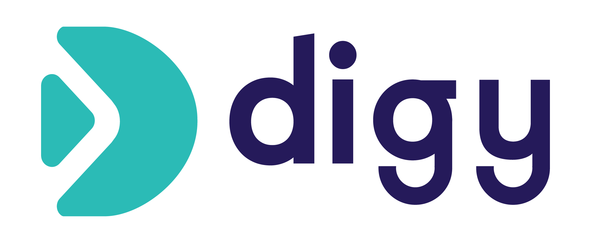

Systemic is a couse that teaches people to learn english in dynamic way making it easier to develop talking skills. Students learn various subjects making them get familiar and interact with English. They use problem-solving abilities and express themselves in many ways.
Some ways they practice the language is by wirting, speaking, reading, and listening. Also, the teachers have a daily development, ensuring they are ready to effectively. Exclusive Materials:
Systemic Bilingual provides unique didactic materials.
Por que é importante aprender inglês?
O inglês se consolidou como a língua universal da comunicação, globalização e negócios, e seu domínio oferece inúmeros benefícios pessoais e profissionais. Entre os principais motivos para aprender o idioma, destacam-se:
Oportunidades de carreira: Profissionais que dominam o inglês têm acesso a cargos melhores, maiores salários e mais oportunidades de emprego, tanto em empresas multinacionais no Brasil quanto no exterior. O inglês para negócios, em particular, é fundamental para o sucesso em um mercado de trabalho globalizado.
Acesso à informação: Grande parte do conteúdo online, pesquisas científicas, tutoriais e literatura clássica é produzida em inglês. A proficiência no idioma abre portas para um universo de conhecimento que não está disponível na língua portuguesa.
Expansão acadêmica: O domínio do inglês é um requisito comum em universidades e institutos de pesquisa internacionais, facilitando a participação em intercâmbios, projetos de pesquisa e cursos no exterior.
Comunicação global: Seja para viagens ou para expandir sua rede de contatos (networking), o inglês permite interagir com pessoas de diferentes culturas ao redor do mundo, criando conexões valiosas.
Desenvolvimento cognitivo: Aprender um novo idioma, como o inglês, é um exercício para o cérebro que aprimora habilidades cognitivas, como memória, foco e resolução de problemas.
Vantagens de quem estuda pela Digy:
- Flexibilidade de horário;
- Milhares de atividades gamificadas;
- Ranking entre estudantes como estratégia de engajamento;
- Ferramenta avançada de avaliação e feedback de pronúncia;
- 100% das atividades gravadas por falantes nativos;
- Relatórios detalhados da evolução linguística com base em dados;
- Monitoramento da evolução do nível de proficiência (CEFR).

DATE OF FOUNDATION: The Systemic Bilingual program has been active in the market since 2002.
FOUNDER: Vanessa Tenório was one of the coounders
VISION: Expand the bilingual educational method to prepare students to real world problems and conversations.
A Digy é uma solução digital de aprendizado do inglês criada para atender toda a comunidade escolar.
Como utiliza metodologias ativas e jornadas gamificadas, a plataforma é uma solução divertida e eficaz de aprendizagem do inglês, promovendo assim um grande engajamento dos estudantes.
Quais são as soluções da Digy? Online Proeficiency Test and Language Development.